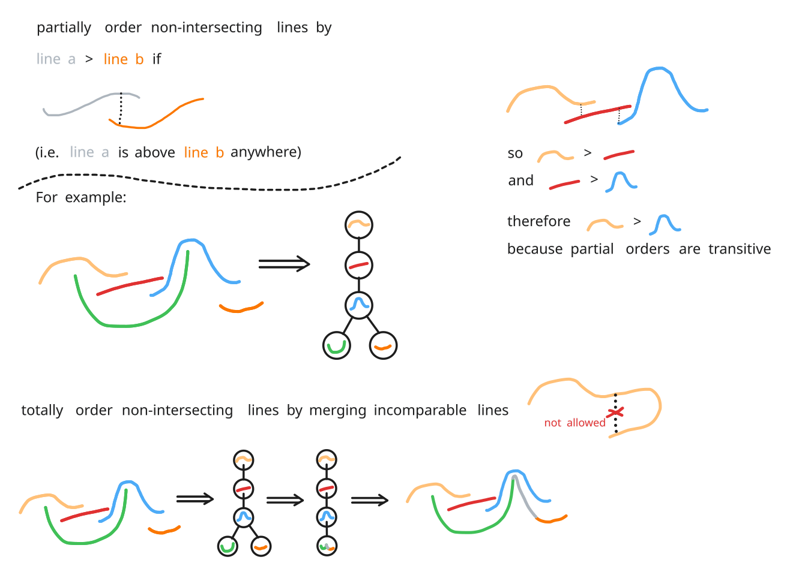

hi all this presentation is about carrots, during the presentation I'll be moving this little vegetable around and you can see all my keyboard inputs in the bottom left corner in other editors a carrot looks like this I-beam or an underscore and a lot of the time it's blinking.
this presentation is also about visual editors so for context I want to show you this spectrum of visual editors. Starting on the left here with the tried and true versatile traditional code editor. In this editor you're editing text and you're moving your code around to navigate that text. Next we have a structural editor; in this editor it looks like text but you're actually editing something like an AST, that can make the controls feel pretty unfamiliar and unintuitive, but you can put some interesting things in your code like this Matrix. Next we have this code or text editor that lets you embed and create custom interactive editors and put them in your code in this particular slide we have some code that defines a red black tree balancing algorithm. Next we have a structural editor that lets you embed and create custom interactive editors into your code here you can see a Color Picker embedded in some code a table and a slider embedded in some code and a plot of some grades embedded in some code. These two editors beautifully blend text and visual editing. Next we have scratch blocks which is actually quite similar to the structural editor except that you're moving blocks around and you're thinking spatially about how you're rearranging your program. Finally on the right we have a representative from the wondrous and underexplored region of spatial programming. In this programming language you define some rules spatially and using colors and then your program plays out in a spatial and color-based way so you're never thinking about text or ASTs or anything like that. In this programming language it's totally Visual and spatial.
I really love this entire Spectrum but I'm in particular interested in building a bridge between text programming and visual programming.
so I've been working on a side project which is a hybrid text visual editor called polytope but in polytope we can't navigate visual editors without using our Mouse and I'll show you what I mean. I've switched over to polytope here and I have a graph editor in my code and a music editor and let's try to edit one of the nodes in My Graph editor using just my keyboard I'll press right a few times on my keyboard oh I'm on the other side of the graph I'll press left a few times and I'm on the other side of the graph again there's no way for me to get into the nodes of the graph and edit them so I have to move my mouse click on one of them and use my keyboard and then click outside and down here we have a slightly more robust example of a music notation editor where I can navigate in and out of it but there's some weird things like if I press up or down I just stay in the editor where I might expect to go to the line below or the line above outside of the editor and likewise if I go down here and then press up I just go to after the music editor or before the music editor and this is because right now my navigation is implemented in an index-based way What should visual caret nav be? so I know in polytope I want to have carrot navigation for all my editors but what could visual carrot navigation be first of all it could feel text editory which means that it should strongly utilize the intuition users have coming from a text editor and it should be an actual extension of text editor controls if we come up with a scheme for visual current navigation and we apply it to text then we should get back normal text editor controls and if we apply it to visual editors it should feel intuitive and like an extension of text editor controls it should also be automatic so it should work for any visual editor so users can create editors without thinking about carrot navigation in other words the current navigation should be based on visual properties and it should be independent of the data model of the user's editors this is important for accessibility so that we can guarantee that all editors have carrot navigation finally it should be composable which means that controls should be seamless and identical in between and in and out of diverse editors navigating around a document full of diverse editors should just feel like you're using one control scheme and you shouldn't feel boundaries between editors where you have to think about switching control schemes so the idea behind all of this is to unite visual programming and text programming with some common controls Prior art with all this in mind I looked all around for a carrot navigation algorithm but upon research none of them had what I wanted for polytope here's what I looked at and researched while working on this a solution to this problem in Polito I looked at the w3c spatial navigation spec for web browsers you can use this in your web browser if you enable a flag and it allows you to navigate navigate around web pages using keyboard controls that feel spatial and intuitive I looked at an awesome stack Overflow thread called four-way navigation algorithm there's a great GitHub repo called spatial keyboard navigation Netflix has a blog post on four-way carrot navigation because on a TV users just have access to a remote with four directional controls there so Netflix wants to make their uis work automatically on TVs and I also looked at Rich Text editors but the problem with these is that they're closed source so I don't know what they're doing and it's also unclear if their methods can be applied to arbitrary user created editors or if they just work for the editors or the components that are available in these rich text editors What makes text editors so... text editor-y? what makes text editors so text editory I want to answer this question from a spatial and visual perspective so that I can apply my answer to visual and spatial editors to consider this let's look at this example code snippet down here I can navigate this code snippet just like a normal text editor and firstly this text has a predefined set of places where the carrot can go which I call carrot sinks and I visualize it here and these carrot sinks are purely spatial data that each of them are an x and y coordinate of the top of the carrot sink and then length of how far the carrot sync extends down or you can use a different representation like an x and y coordinate of the top of the carrot sync and an x and y coordinate at the bottom of the card sink but the idea is just that it's spatial data now that we're thinking in terms of carrot sinks here's the main idea in a text editor carrot sinks are partitioned into lines these lines are vertically ordered from top to bottom and inside each line carrot sinks are ordered strictly from left to right we've partitioned carrot sinks into lines it's easy to define the actions of the four arrow keys on the carrot pressing left goes to the previous carat sink in the current line unless you're at the beginning of a line or the first carrot sink in a line then you go to the last carrot Sink of the previous line pressing right goes to the next carrot sink in the line or if you're at the end of the line it goes to the first carrot sync in the next line pressing up goes to the closest carrot sink in the line above to Define it spatially instead of in a column based way and pressing down goes to the closest carrot sync in the line below and we can see how that works for differently sized lines the main idea is that carrot sinks are partitioned into lines these lines are vertically ordered and with carrot sinks partitioned into vertically ordered lines it's easy to define the actions of the arrow keys this idea is what differentiates this work from the prior art and we can use this idea to extend text editor carrot navigation to visual editors Sketch of how to partition caret sinks into lines I'll briefly describe a way to put partition carrot sinks into lines start by putting every carrot sink in a line by itself then until you can't anymore repeat finding the two closest lines that don't vertically overlap and merge those two lines as long as merging doesn't cause that line the new merge line to intersect with any of the existing lines note that your choice of distance function matters if you want horizontal lines you should choose a distance function that is biased towards things that are horizontally close visual caret nav demo now I'll just go through some extra examples and then I'll show off something extra you can add to this idea so here's some visual editors with their carrot sinks and we can group these into lines in the same way and with that we can use the method I guess described Tad current navigation I just navigate around a bit Nested caret sinks demo now you might notice something a bit strange that you can navigate it over here what's after the S is the N equals one line and pressing up here goes to n equals one where you might expect it to go directly to here and that's because the N equals one is on a line on its own now I'll show off a way you can group together card sinks so you don't get these straight lines that seem to be part of this submission notation or this diagram so you can group together card sinks that should be grouped with other characters and that's the idea of nested carrot sinks the idea of nested cart sinks is that lines are made up of carrot sinks or carrot sinks containing other carrot sinks and if you navigate to a carrot sink that contains other carrot sinks then it delegates to the carrot sinks inside of it here I can navigate within the summation notation with line wrapping now and if I go to this line and I press down it doesn't go to n equals one it goes to this what feels like the next line and it's important to note that although the representation is nested and hierarchical if we turn off the visualization to the user it shouldn't feel hierarchical it should just feel like you're navigating to the intuitively right place based off the direction you're you're pressing Rewind and thank you thanks for watching I hope to make some more information and maybe some code about this carrot stuff available at some point so you can follow along at elliot.website slash editor